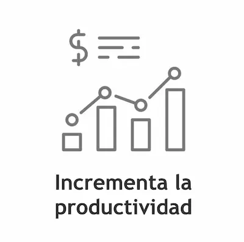

Nuestros servicios
Fertilizaciones
-
Aplicación de Urea y nitro doble con altina.
-
Aplicación de UAN con mosquito.
-
Generamos reportes de aplicación para el posterior análisis de rendimiento y efectividad de las aplicaciones indicadas por estudios de suelo.
-
Nuestros equipos: Pla MAP5000.


Distintos tipos de fertilizantes FERTILIZACIÓN FOLIAR CON UREA Y UAN LÍQUIDO
.svg "Contáctenos")